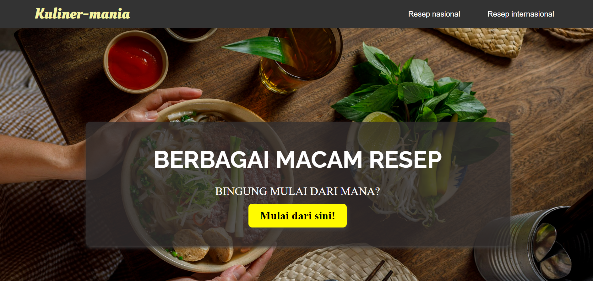

Kuliner-mania
Kuliner-mania is a group project. The theme centered around culinary, food and cooking recipe. Special thanks to Marsa Qurratu'ain, Nadya Aura Binoto Gultom, Shirin Nur Fadhillah and Muhammad Rizalul Fikri Syah Dani who collaborated with me to build this project from scratch to the end.